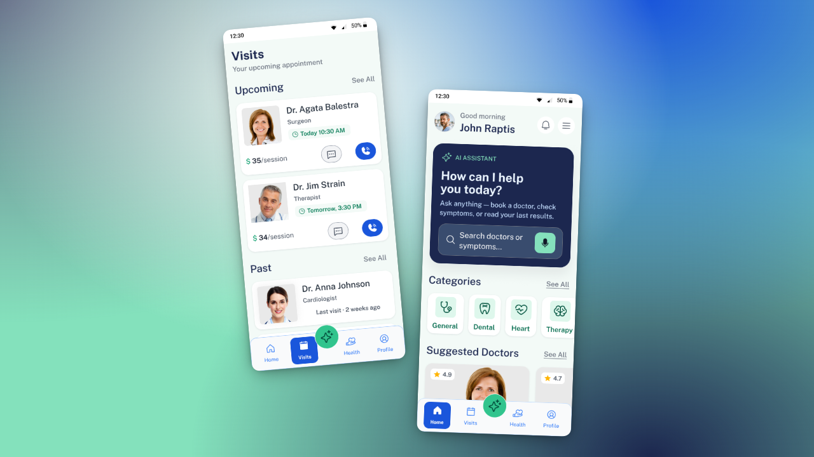
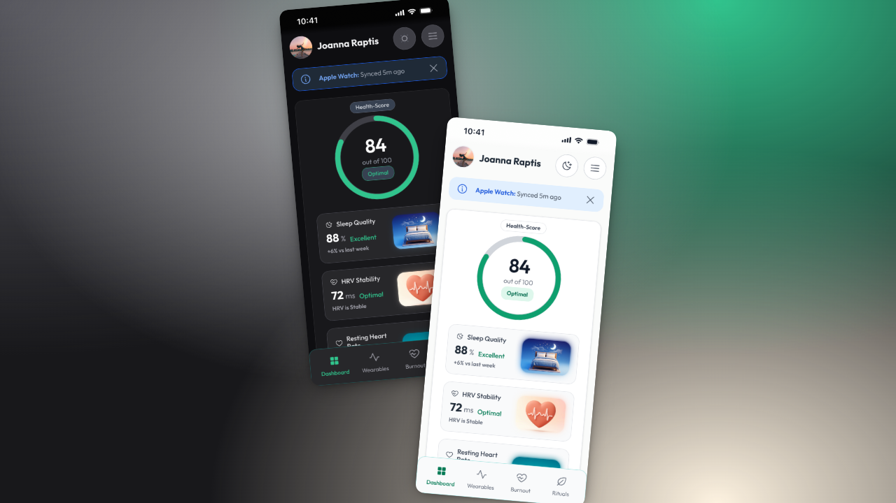
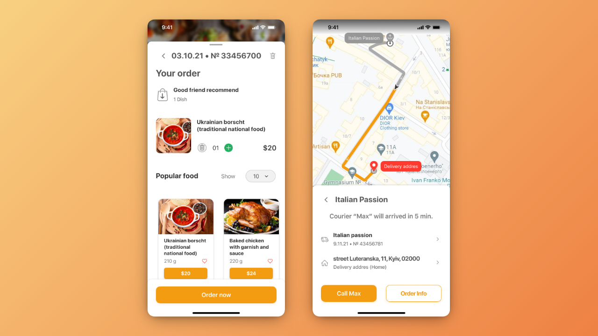
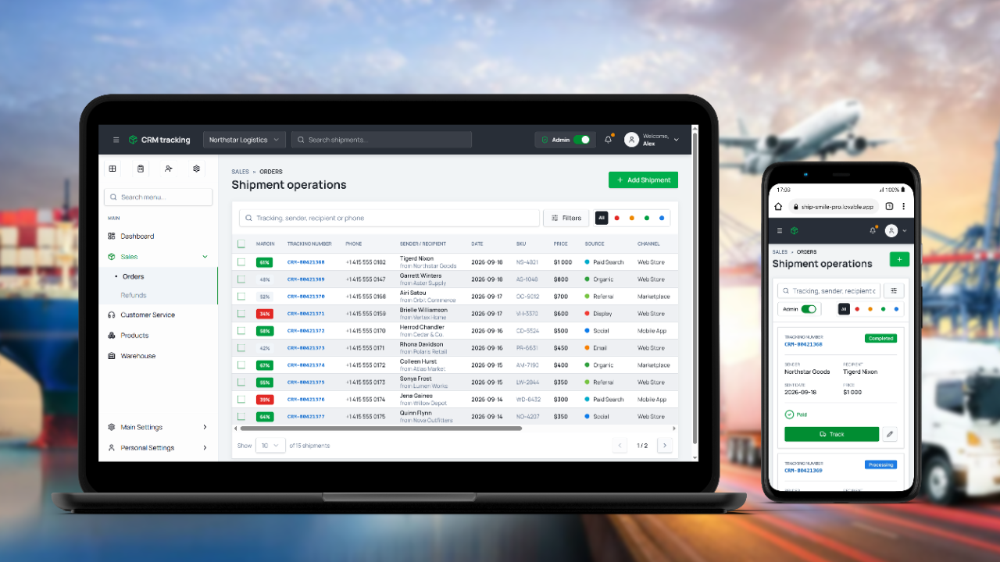
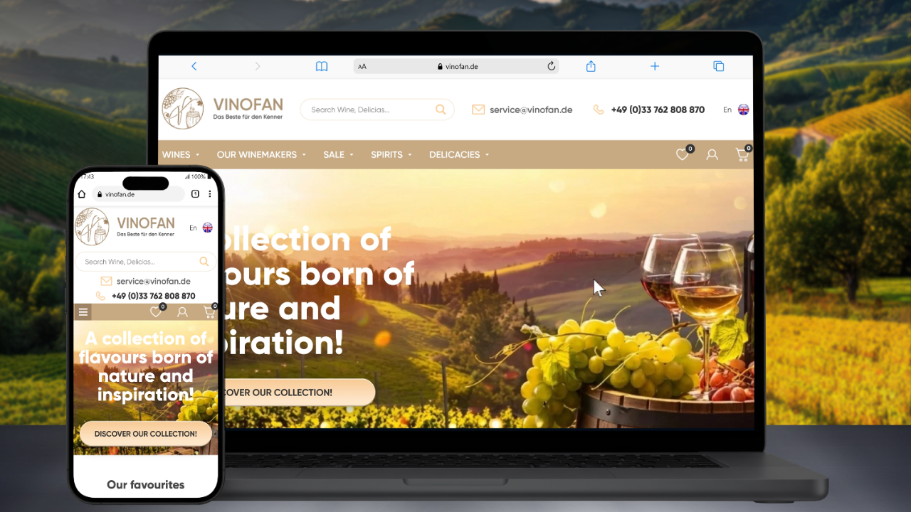
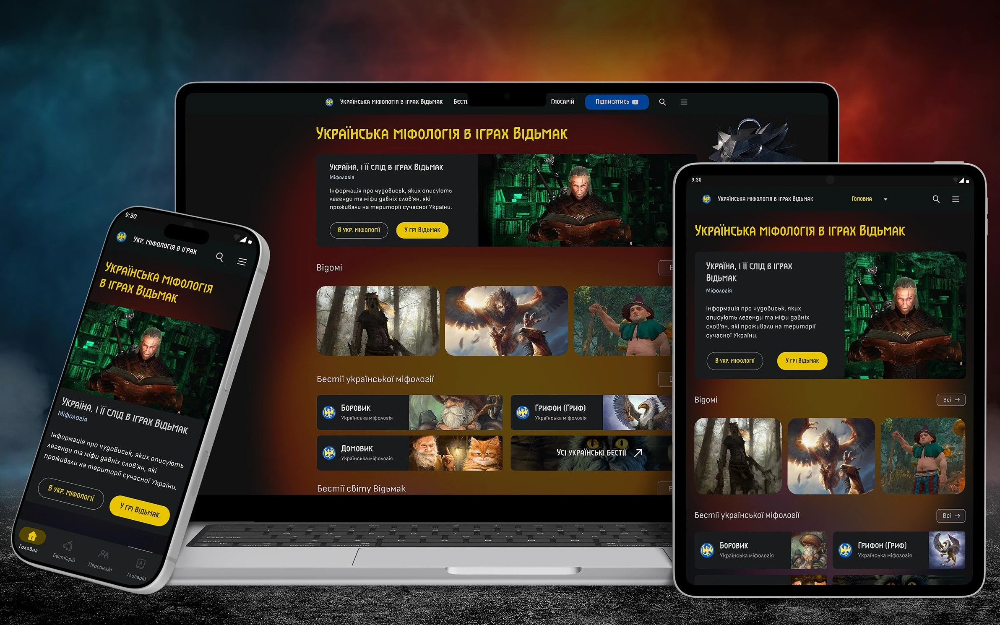

AI-driven mobile UX platform
Created intuitive AI features, standardized internal asset libraries, and developed adaptive component sets for a fast-moving product sprint.
-24% Time on Task
FinTech · AI Products · Accessibility
7+ years in UI/UX backed by Systems Engineering. Turning complex user flows into clean, human interfaces.
HIGHLIGHTS
Landings and full sites — from strong logical structure to clean, dev-ready UI.
Refining existing interfaces around user metrics and real business goals.
Quick usability audits that spot conversion blockers before they cost you users.
Flows, wireframes, and interactive prototypes built for fast validation.
Turning complex constraints into clear, high-performing digital interfaces.

Created intuitive AI features, standardized internal asset libraries, and developed adaptive component sets for a fast-moving product sprint.

An intuitive health-tracking app featuring seamless user flows, clear visual hierarchy, and an interactive prototype.

Redesigned cart navigation, payment checkout, and multi-scenario onboarding to build trust at the moment users were most likely to drop off.

Data-dense system with admin and user role-based flows, interactive tables, and analytical dashboards built for daily operator use.

End-to-end web design featuring interactive taste profiling, catalog discovery, and conversion-focused checkout — built and iterated independently over time.

A conceptual project for the research and visual adaptation of Ukrainian folklore and demonology within the universe of The Witcher fantasy games.
Design mindset
A degree in systems engineering from Dnipro University of Technology means I don't just draw interfaces — I think in constraints, states, and hand-offs. That background shapes three things in every project I take on:
Specs and design tokens that map directly onto what engineers actually build, cutting back-and-forth.
Design decisions weighed against real platform and performance constraints from the start.
Accessibility is a starting constraint, not a late-stage audit — color, contrast, and flows are checked as I go.
A path from FinTech banking to AI product sprints, with a long independent practice running throughout.
Jun 2025 – Aug 2025
AI product sprint. Created intuitive AI features, standardized asset libraries, developed adaptive component sets.
Apr 2021 – Apr 2022
iOS food delivery app. Redesigned cart, checkout, and onboarding; reduced churn and lifted registrations.
May 2014 – Present
Long-term projects including the wine e-commerce platform and the logistics & package tracking CRM.
Jan 2013 – Apr 2014
FinTech internet & mobile banking, B2B/B2C, with a focus on SME tax and invoicing workflows.
Services
Focused 50-minute session: solve a tough UX problem, polish your portfolio, prep for interviews, or get expert design feedback.
End-to-end custom website: solid UX structure, clean visual direction, and responsive UI specs ready for developers.
Practical interface review: identifying usability friction, conversion bottlenecks, and clear actionable steps to fix them.
Specialist in Systems Engineering — Dnipro University of Technology. Computer engineering, systems architecture, and visualization.
Looking for a product designer to scale your FinTech, AI, or SaaS ecosystem?